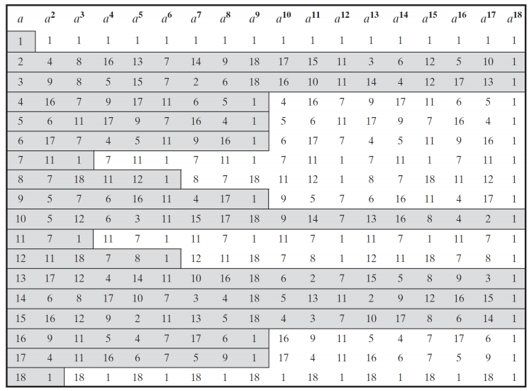

Chapter 6. 정수론 정리(Number Theory)¶
1절. 페르마의 정리(Fermat's Theorem)¶
페르마의 정리¶
-
p가 소수, a가 p로 나누어지지 않는 양의 정수일 경우
-
\(a^{p−1}\) \(≡\) \(1\) (\(mod\) \(p\))
-
p가 소수이고 a가 양의 정수일 경우
-
\(a^p\) \(≡\) \(a\) (\(mod\) \(p\))
예시¶
-
\(2^{10}\) \(≡\) \(x\) (\(mod\) \(11\))에서 \(x\)의 가장 작은 비음수 정수 ?
-
x = 1
-
\(3^{52}\) \(≡\) \(x\) (\(mod\) \(11\))에서 \(x\)의 가장 작은 비음수 정수 ?
-
\(3^{52}\) \(≡\) \((3^{10})^53^2\) \(≡\) \((1)^59\) \(≡\) \(9\) (\(mod\) \(11\))
\(∴ x = 9\)
2절. 오일러의 정리(Euler's Theorem)¶
오일러의 토션트 함수(Euler's Totient Function) (=\(π\)) \(φ(n)\)¶
- \(φ(n)\)은 \(n\)보다 작거나 같은 수 중 n과 서로소인 양의 정수의 개수
-
p, q가 소수일 때
-
\(φ(p) = p − 1\)
- \(φ(p^k) = p^k − p^{k−1}\)
-
\(φ(pq) = pq − p − q + 1 = (p − 1)(q − 1) = φ(p)φ(q)\)
-
예시
-
\(φ(13) = 12, φ(21) = φ(3) φ(7) = 2 × 6 = 12\)
-
오일러의 곱셈 공식
-
\(n = p_1^{k_1} p_2^{k_2} ⋯ p_r^{k_r}\) 형태의 수에서, \(p_1 < p_2 < ⋯ < p_r\)는 소수일 때,
\(ϕ(n) = ϕ(p_1^{k_1}) ϕ(p_2^{k_2}) ⋯ ϕ(p_r^{k_r}) = (p_1^{k_1} − p_1^{k_1}−1)(p_2^{k_2} − p_2^{k_2}−1) ⋯ (p_r^{k_r} − p_r^{k_r}−1)\)
-
예시
-
\(φ(36) = φ(2^23^2) = (2^2 − 2^1)(3^2 − 3^1) = 2⋅6 = 12\)
-
\(φ(17640) = φ(2^33^25^17^2) = (2^3 − 2^2)(3^2 − 3^1)(5^1 − 5^0)(7^2 − 7^1) = 4032\)
오일러의 정리(Euler's Theorem)¶
-
a와 n이 서로소인 경우 (\(a ∈ Z_n^*\))
-
\(a^{φ(n)}\) \(≡\) \(1\) (\(mod\) \(n\))
예시¶
-
\(8^{82}\) \(≡\) \(x\) (\(mod\) \(165\))에서 x의 가장 작은 비음수 정수 ?
-
\(φ(165)\) \(=\) \(φ(3¹5¹11¹)\) \(=\) \((3−1)(5−1)(11−1) = 2⋅4⋅10 = 80\)
-
\(8^{82} ≡ 8^{80}8^2 ≡ 1⋅64 ≡ 64\) (\(mod\) \(165\))
\(∴ x = 64\)
3절. 소수 테스트¶
밀러 - 라빈(Miller - Rabin) 소수 판별 테스트¶
- MR 테스트는 주어진 숫자가 소수인지 확인하는 효율적인 확률적 알고리즘
- 테스트를 통과한 숫자는 반드시 소수일 필요는 없음
- 만약 합성수에 대해 여러 번 독립적인 테스트를 수행하면, 각 테스트에서 통과할 확률은 \(1/4^ N\) 이하
아그라왈 - 카얄 - 삭세나(Agrawal - Kayal - Saxena) 소수 판별 테스트¶
- 2002년에 개발된 결정론적 다항 시간 소수 판별 알고리즘
- 이론적으로 중요하지만 효율성은 낮음
4절. \(Z_n\)과 생성자(Generators)¶
정의(Definition)¶
- \(Z_n\)의 곱셈군은 \(Z_n^* = {a ∈ Z_n | gcd(a, n) = 1}\)
- (\(|Z_n^*| = φ(n)\))
- \(a ∈ Z_n^*\)일 때 (\(a\)와 \(n\)이 서로소일 때), \(a\)의 순서는 \(a^t ≡ 1\) (\(mod\) \(n\))을 만족하는 가장 작은 양의 정수 \(t\)
- \(a ∈ Z_n^*\)이고 \(a\)의 순서가 \(φ(n)\)이라면, \(a\)는 \(Z_n^*\)의 생성자 또는 원시 근
- \(Z_n^*\)에 생성자가 있으면, \(Z_n^*\)는 순환군
정리(Theorem)¶
- p는 홀수 소수이고 k ≥ 1인 경우, \(Z_n^*\)는 \(n = 2, 4, p^k\) 또는 \(2p^k\)일 때 생성자가 존재
- p가 소수일 경우 \(Z_p^*\)는 생성자가 존재
